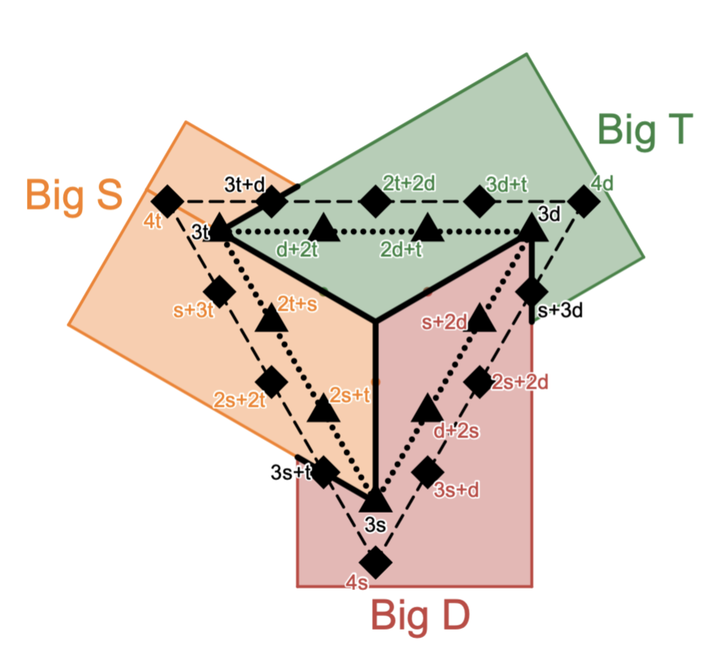
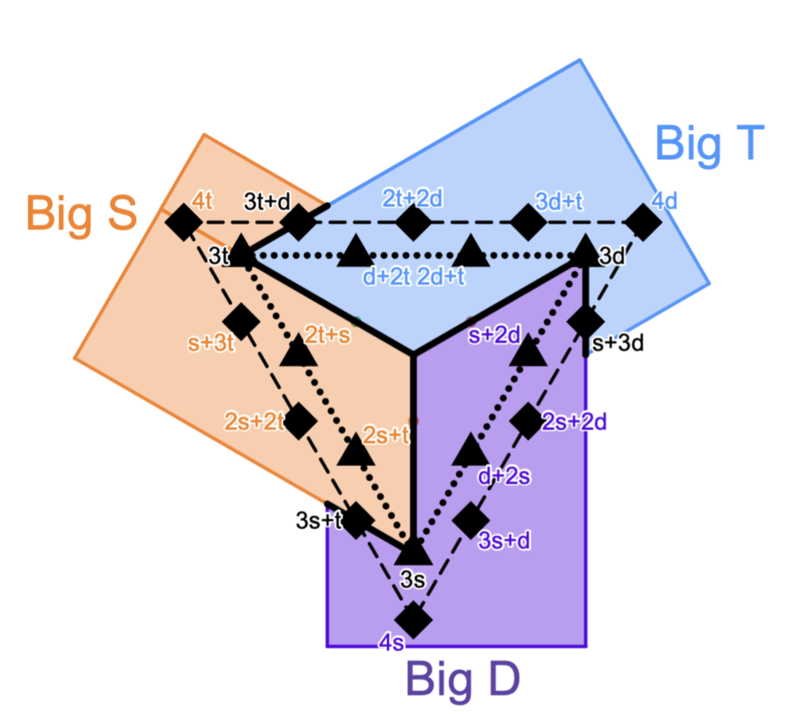
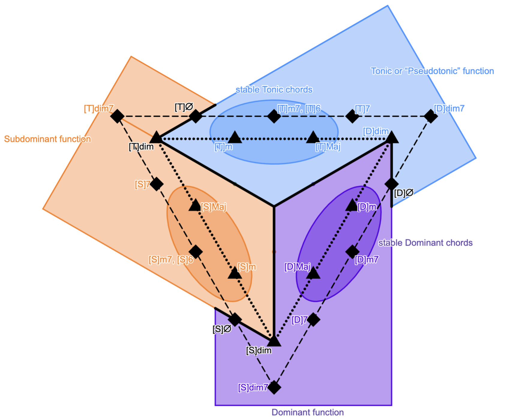

hsjoihs
2026-06-14
I propose method of color-counting, a very crude yet mildly useful method of assigning labels “T” / “S” / “D” to chords. It seeks to somewhat approximate the traditional tonic/subdominant/dominant terminology used in the functional harmony, but prioritizes symmetry over practicality.
Using the following color scheme (three sets of diminished-7th chords), color all the notes in the chord.
| t | ♯IV, VI, I, ♭III |
| s | VII, II, IV, ♭VI |
| d | ♯I, III, V, ♭VII |
For instance, A7 in the key of C (either major or minor: the coloring is agnostic to changes in minor third) has A (VI), C♯ (♯I), E (III) and G (V) as its chord notes. Hence this chord has 1 small t and 3 small ds.
Pick all the pairs of two colors, and judge by the following table:
| t + s | s + d | d + t | ||||||||||||||||||||||||||||||||||||||||||||||||||||||||||||||||||||||||||||||||||||||||||||||||||||||||||||
|
|
|
For instance, 3 small ds plus 1 small t is a Big T, so we can see that A7 in the key of C is a Big T.
Alternatively, look at the following diagram.


I wanted a way of very crudely assigning harmonic functions to chords. I looked into Ernő Lendvai's axis system, where the twelve tones of the chromatic scale are grouped into three sets.
The structure is three-fold symmetric over the twelve-tone equal temperament:
| T | I |
| D | ♯I |
| S | II |
| T | ♭III |
| D | III |
| S | IV |
| T | ♯IV |
| D | V |
| S | ♭VI |
| T | VI |
| D | ♭VII |
| S | VII |
This can be mapped to a nice tonnetz (here written in a square grid such that it becomes a subset of WHiSq: Wicki–Hayden in Squares / Midimech):
By arranging this into a triangle, we arrive at the following symmetry.


This arrangement is quite reminiscent of the diagram displayed in The Pop Descriptivist's “A Unified Theory of Diminished Chords” which is partly based on the ideas of Barry Harris:
Also, consider a cubic lattice.
Then, starting from the origin (at the center) and moving along each axis (pun intended), we can plot the chords on this grid:


This method is a massive overgeneralization; for instance, it ignores the difference between C-E-G and E-F#-G. Hence I did not claim that what I am talking about is “tonic”, “subdominant” or “dominant”